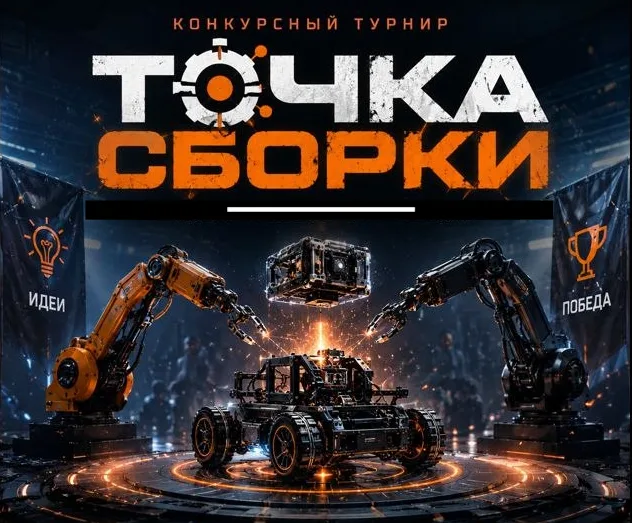

Синхрон
Одновременная игра площадок после официального анонса. Команды играют один и тот же пакет.
CHGK · Узел Первый · Vol. 1 · 2026
Конкурсный турнир, в котором вопросы проходят путь от идеи до общего пакета. Сейчас идёт финальная сборка после тестов.

О турнире
«Точка сборки» — конкурсный турнир, где вопросы не просто собираются в один пакет, а проходят несколько кругов: авторскую идею, слепое рассмотрение жюри, рекомендации, тесты и финальную редактуру.
Первый узел стартовал в середине мая 2026 года. К концу мая был сформирован состав жюри, 4 июня открылся приём вопросов, а 1 августа приём был закрыт.
После этого жюри рассмотрело поступившие работы, отобрало самые перспективные и дало авторам рекомендации по улучшению. Затем прошла серия тестов — по их результатам и собирается финальная версия пакета.
Слепое судейство — не украшение, а правило игры. Авторство не влияет на оценку.
Тексты вопросов, имена авторов, комментарии и источники не публикуются на сайте до завершения турнира. Это часть формата слепого судейства.
Хроника
Каждый этап можно обсудить: выберите «Обсудить этап» — форма ниже подставит нужную тему.
Появилась идея конкурсного турнира, в котором вопросы проходят путь от авторской идеи до общего пакета.
Собрана команда жюри: Александр Коробейников, Наталья Кудряшова и Константин Сахаров. Организатор — Александр Гринберг.
Открыт приём работ на конкурс. Авторы могли прислать свои вопросы и согласие на дальнейшую доработку.
Поступило 100 работ. Приём вопросов завершён, жюри перешло к рассмотрению.
Жюри рассмотрело работы, отобрало самые перспективные и дало авторам рекомендации по улучшению.
После доработки прошла серия тестов. В тестовой сборке — 39 работ.
По результатам тестов жюри решает, как будут выглядеть вопросы, которые войдут в финальную версию пакета.
После финальной сборки будет объявлено о самом турнире: даты, форматы и условия участия.
Турнир пройдёт в двух форматах: синхрон для площадок и асинхрон для тех, кому удобнее играть в своё время.
После игры — общественное обсуждение и оценки жюри. Они станут основой для определения призёров.
Объявление призёров, вручение призов и публикация результатов турнира.
Турнир задуман как ежегодный. Следующий узел — Vol. 2 — появится в календаре после завершения первого.
Обратная связь
Вопрос, идея, предложение по организации или просто желание следить за проектом — напишите оргкомитету. Форма работает без регистрации.
Формат
Конкурс и сам турнир — две части одного пути. Сначала собирается пакет, затем он играется на площадках и в асинхроне.
Одновременная игра площадок после официального анонса. Команды играют один и тот же пакет.
Возможность сыграть пакет в удобное время — для тех, кто не попал на синхронную площадку.
Жюри оценивает текст без имени автора. Авторство известно организатору и отдельным тестерам.
После турнира — общественное обсуждение и оценки жюри. Они становятся основой для итогов.
Призёры определяются по результатам обсуждения и оценок жюри. Вручение призов — финальный этап.
Турнир задуман как ежегодный. Каждый новый узел — новая сборка, новые авторы и новые площадки.
Жюри и оргкомитет
Жюри оценивает работы слепо: имена авторов не передаются членам жюри. Организатор координирует этапы и остаётся единственным, кто знает полное авторство.
Организатор · оргкомитет
Координация этапов, связь с жюри и авторами, сборка финального пакета.
Член жюри
Слепая оценка, отбор работ и рекомендации авторам.
Член жюри
Слепая оценка, тестирование и работа с финальной редактурой.
Член жюри
Слепая оценка, проверка фактов и работа с рекомендациями.
Анонсы
Изображения из анонсов «Точки сборки». Нажмите на картинку, чтобы открыть её целиком.
Коротко о главном
Конкурсный турнир, в котором вопросы проходят путь от идеи до общего пакета: приём, слепое рассмотрение жюри, рекомендации, тесты и финальная редактура.
До завершения турнира тексты вопросов, имена авторов, комментарии и источники не публикуются. Это условие слепого судейства и уважение к авторам.
Александр Коробейников, Наталья Кудряшова и Константин Сахаров. Организатор — Александр Гринберг.
Дата появится после финальной сборки пакета. Следите за хроникой и анонсами — там будет объявление о синхроне и асинхроне.
Приём вопросов на первый узел закрыт. Участие в турнире как игрока или площадки начнётся после анонса. Для связи используйте форму обратной связи.
Да, турнир задуман как ежегодный. Следующий узел — Vol. 2 — появится после завершения первого.
Вопросы не публикуются на этом сайте. Возможность публикации пакета и условия распространения будут объявлены отдельно.
Через форму обратной связи или Telegram @karolLir.
Следующий шаг
Анонс турнира, даты синхрона и асинхрона, результаты и призы появятся в хронике. Если хотите что-то предложить — напишите.